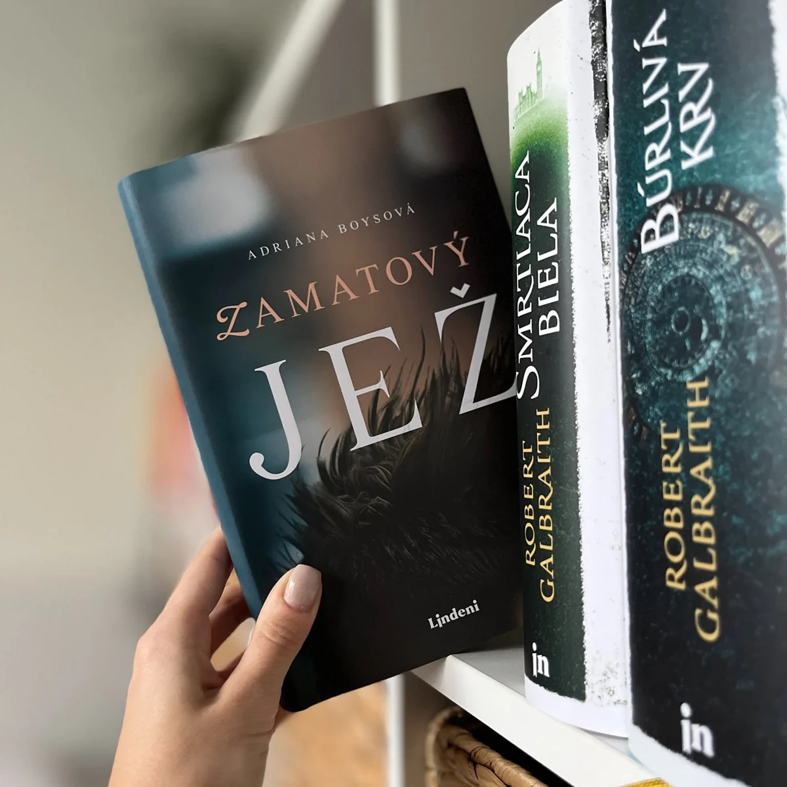

Zamatový jež
Viete, prečo sa väčšina rozprávok končí formulkou: a žili šťastne, až kým nepomreli? Pretože pocit šťastia je taký krátky, že ak nezomriete práve vo chvíli najväčšieho šťastia, zákonite z neho vytriezviete.
Príbeh o krehkosti vzťahov, dôsledkoch nečinnosti a chuti po živote.
„... aké krehké sú vzťahy. Aké samozrejmé sa zdajú a ako ľahko sa dá o ne prísť..."

„...srdce je sval a čím viac miluje, tým viac lásky sa doň zmestí."
Štrnásťročný Peter žije v provinčnom anglickom mestečku s mamou a bratom. Pokojnú idylku zaspatého mesta naruší nešťastná udalosť a Petrove vyhliadky sa scvrkávajú na jednotvárne výseky krajiny rozprestierajúcej sa za zamrežovanými oknami.
Kým hľadá spôsob, ako prežiť v nápravnovýchovnom ústave tisíc nových rán, jeho blízki zápasia s vlastnými problémami. Po uplynutí trestu Peter odchádza z Anglicka a pokúša sa začať nanovo v dome starých rodičov na Slovensku.
Zamatový jež je spoločenský román o dospievaní, vine, odpustení a hľadaní vlastnej identity na rozhraní dvoch kultúr a dvoch životov, predtým a potom.
Prečo si román všimnúť
- Kritické ohlasy: Recenzent kultúrnej prílohy denníka SME prirovnal román k slávnemu Salingerovmu dielu Kto chytá v žite, čo je pre debut mimoriadne výrazné uznanie.
- Autentické prostredie: Príbeh je zasadený do sveta dospievajúceho hrdinu so slovensko-poľskými koreňmi, odohráva sa na britskom vidieku a na Slovensku, je zároveň sondou do života ekonomických migrantov z východnej Európy v Británii.
- Silné metafory a jazyk: Čitatelia aj recenzenti oceňujú štýl písania a jazyk knihy, román je napísaný s množstvom výrazných metafor.
- Pre koho je román vhodný: Zamatový jež osloví čitateľov, ktorých zaujímajú príbehy o dospievaní a hľadaní identity, ako aj tých, ktorých sa dotýka téma migrácie, rodinných vzťahov a druhých šancí. Knihu možno odporučiť každému rodičovi - nie pre smutný obsah, ale pre hlboké zamyslenie nad tým, ako viesť deti k zodpovednosti a predvídaniu dôsledkov svojich činov. Román je taktiež výnimočným darčekom pre každého, koho zaujíma súčasná slovenská próza.